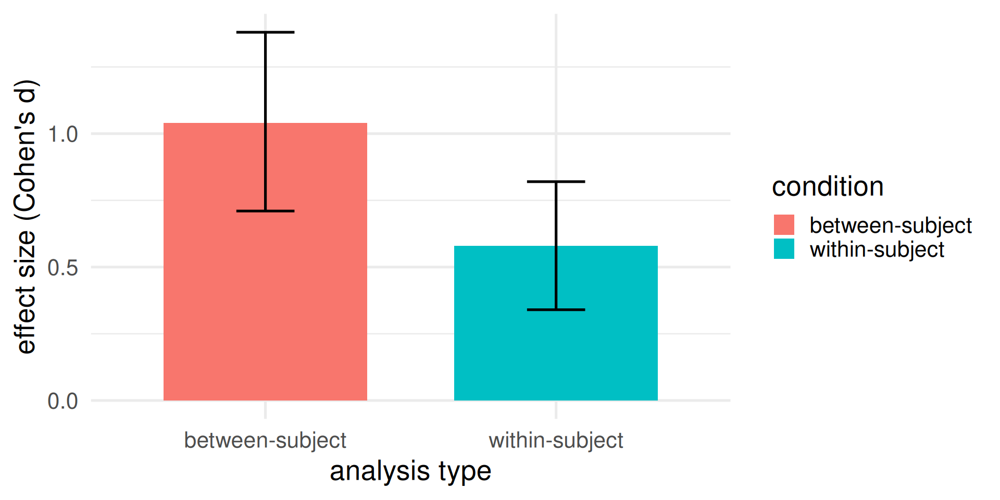
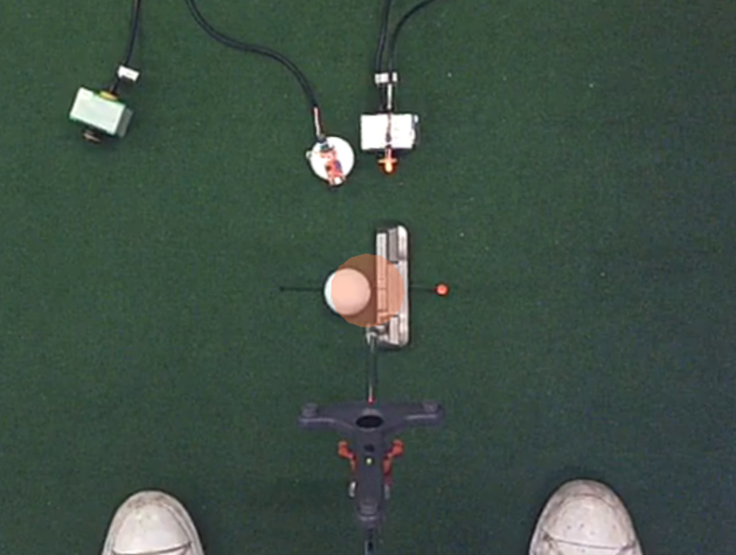

Hot Topics in Sport and Exercise: Quiet Eye
Dr Germano Gallicchio
Lecturer in Psychophysiology and Cognitive Neuroscience
School of Psychology and Sport Science, Bangor University, UK
profile | research | software | learning resources | book meeting
On a computer press F11 to de/activate full-screen view.
For smartphone and review: Bottom left menu -> Tools -> PDF Export Mode.
For pdf document: use “learning resources” link above.
Last modified: February 8, 2026
QR code to
these slides:
0000
Objectives
Being able to:
- describe the Quiet Eye effect
- explain algorithms to quantify Quiet Eye duration from EOG data
- critically evaluate studies using EOG to measure the Quiet Eye
- optional, present methodology and findings to your peers (flipped classroom approach)
Seminar structure
Part 1, Lecturer-driven
- what is the Quiet Eye
- relation between Quiet Eye and performance
- how is it typically measured
- how it can be measured with the EOG
Part 2, Student-driven (flipped classroom)
- Protected time for students to (re)read their chosen paper and then have a small-group discussion of pros/cons/future directions.
Part 1: Is there an optimal oculomotor pattern for better performance?

The Quiet Eye effect
Performance advantage conferred by a steady ocular fixation on a critical target of an action.
Quiet Eye is the time duration wherein:
- gaze is on a critical visual target of the action (e.g., golf ball)
- onset before movement initiation
- offset when gaze deviates from target of a certain quantity
Relation between QE and performance
Medium to very large effects reported in meta-analysis (Lebeau et al., 2016).
Lebeau, J. C., Liu, S., Sáenz-Moncaleano, C., Sanduvete-Chaves, S., Chacón-Moscoso, S., Becker, B. J., & Tenenbaum, G. (2016). Quiet eye and performance in sport: A meta-analysis. Journal of Sport and Exercise Psychology, 38(5), 441-457. https://doi-org.bangor.idm.oclc.org/10.1123/jsep.2015-0123.
How is the QE typically measured?
Through camera-based eye-tracking technology. It requires measuring time during which the critical object lies within 3 deg of visual angles.
Very tedius, time-consuming, and subjective manual coding procedure.

Can the EOG be used to measure the QE?
Yes. But no less challenging. Some advantages: more objective and automatable. Biggest limitation: no spatial information.

Two approaches to quantify QE duration
Dispersion-based algorithm
- Monitors eye position stability
- Detects when the eyes remain within a spatial window
- Analogous to fixation detection in eye-tracking
Velocity-based algorithm
- Monitors eye movement velocity
- Detects when eye velocity falls below threshold
Both implemented in:
Gallicchio, G. (2023). Quiet-Eye-EOG. Zenodo. https://doi.org/10.5281/zenodo.8411093.
Commonalities
- Both algorithms assume that a critical event happens at time 0 (e.g., movement initiation).
- Both algorithms identify the Quiet Eye onset (working backward from time 0) and Quiet Eye offset (working forward from time 0).
- By definition, QE onset must occur before movement initiation (negative time), whereas QE offset must occur at or after movement initiation (zero or positive time).
- Total QE duration is measured as the time interval from Quiet Eye onset to offset.
- We don’t know for sure where participants are looking at. Both algorithms make a big assumption: that the eyes are on the target at time 0. This assumption is often not unreasonable, based on literature and empirical evidence.
And more recent evidence suggests it does not matter where exactly the eyes are looking at.
Dispersion algorithm: Concept
Core principle: The eyes are “quiet” when their position stays within a narrow range. That is, its dispersion does not overcome a set threshold.
More on the threshold later.
Key steps:
- Identify time 0 (e.g., movement initiation)
- Work backwards from time 0, one point at a time, and compare the EOG value at that point with the EOG value at time 0
- If the comparison yields a value that is within threshold: we are still within a “quiet” period, so keep working backwards (repeat step 2).
- Otherwise, stop: you have found the first time point outside of the Quiet Eye period. The Quiet Eye onset is immediately after that point
- Same procedure for Quiet Eye offset but move forward

Dispersion algorithm: the 100 ms rule (for temporal constrain)
Optional, but often implemented
The EOG is a noisy signal. A brief boundary violation (e.g., a short spike in the EOG) shouldn’t necessarily end the QE period. Short, transient deviations should be tolerated, and only sustained exits should count as true violations.
Implementation: the EOG signal should exceed the threshold for at least 100 ms.
Why 100 ms? This is a conventional standard from perception science suggesting that a stable fixation cannot be shorter than 100 ms. But some variation exists in the literature (ranging from 60-150 ms depending on the application).
Dispersion algorithm: median filter
It is convenient to simplify the EOG signal to get rid of (reduce) short-lived features and retain flat portions and edges in the signal (indicating fixations and saccades).
The median filter is ideal. A running window is slid along the signal and for each window, the median is computed.
This filter needs one parameters: the length of the running window.
How to choose it? Also no objective answer, and (cross)validation would be useful.
The first validation of median filter parameters was done in Gallicchio, G., Ryu, D., Krishnani, M., Tasker, G. L., Pecunioso, A., & Jackson, R. C. (2024). Temporal and spectral electrooculographic features in a discrete precision task. Psychophysiology, 61(3), https://doi.org/10.1111/psyp.14461.
Velocity algorithm: Concept
Core principle: The eyes are “quiet” when they move slowly. That is, when they move at a velocity within a set threshold.
More on the threshold later.
Key steps:
- Compute eye velocity from EOG signal (i.e., rate of change of position over time). For a time series use “differentiation” (computing the “derivative”, aka “rate of change”).
- Identify time 0 (e.g., movement initiation)
- Work backwards from time 0, one point at a time, and compare the EOG velocity at that point with the EOG velocity at time 0
- If the comparison yields a value that is within threshold: we are still within a “quiet” period, so keep working backwards (repeat step 2).
- Otherwise, stop: you have found the first time point outside of the Quiet Eye period. The Quiet Eye onset is immediately after that point
- Same procedure for Quiet Eye offset but move forward
Velocity algorithm: smoothing filter
Differentiating a signal tends to amplify high-frequency noise. Therefore, it is important to smooth the signal before computing velocity.
For a noisy time series use “Savitzky-Golay filter”. A running window is slid along the signal. For each window, a polynomial is fitted to the data points within that window. The polynomial (and not the raw data) is differentiated. The central point of the window is then replaced with the value predicted by the differentiated polynomial.
This filter needs two parameters: the length of the running window and the order of the polynomial.
How to choose them? Also no objective answer, and (cross)validation would be useful.
The first validation of Savitzky-Golay filter parameters was done in Gallicchio, G., Ryu, D., Krishnani, M., Tasker, G. L., Pecunioso, A., & Jackson, R. C. (2024). Temporal and spectral electrooculographic features in a discrete precision task. Psychophysiology, 61(3), https://doi.org/10.1111/psyp.14461.
Threshold
How to decide within which range eye movements are still considered “quiet eye”?
Most of the eye-tracking literature uses 3 degrees (dispersion algorithm) or 33 degrees / second (velocity algorithm) as criterion to define fixations.
However, there is no objective answer and the threshold should be (cross)validated on the data at hand.
The first validation of threshold was done in Gallicchio, G., Cooke, A., & Ring, C. (2018). Assessing ocular activity during performance of motor skills using electrooculography. Psychophysiology, 55(7), 1-12. https://doi.org/10.1111/psyp.13070.
Dispersion vs. Velocity: Conceptual differences
| Aspect | Dispersion algorithm | Velocity algorithm |
|---|---|---|
| Question | “Are the eyes staying roughly in the same place?” | “Are the eyes moving relatively slowly?” |
| What it measures | Changes in EOG position* | Changes in EOG velocity* |
| Advantage | More intuitive, directly relates to visual fixation | Less sensitive to drift and baseline shifts |
Note: * Relative to a set threshold